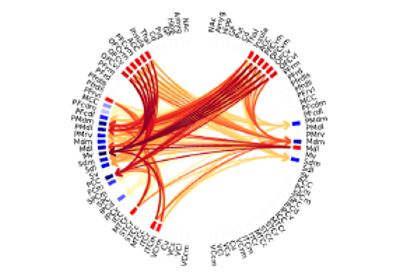

Tutorials# HOIs’ tutorials Tutorials# HOIs’ tutorials Tutorial 2 Tutorial 2 Tutorial 1 Tutorial 1 Low-level Core Functions# Core function 2 Core function 2  Core function 1 Core function 1 Gallery generated by Sphinx-Gallery